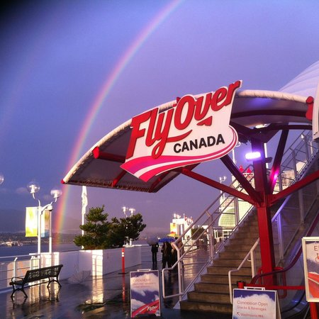

Introduction
Vancouver, a bustling west coast seaport in British Columbia, is among Canada’s densest, most ethnically diverse cities. A popular filming location, it’s surrounded by mountains, and also has thriving art, theatre and music scenes. Vancouver Art Gallery is known for its works by regional artists, while the Museum of Anthropology houses preeminent First Nations collections.
“Canada will be a strong country when Canadians of all provinces feel at home in all parts of the country, and when they feel that all Canada belongs to them.”
World Famous
Flyover Canada

Canada Place
Vancouver
The complete FlyOver Canada experience lasts approximately 25 minutes. Your journey begins with UpLift!, an inspiring audio-visual pre-show that gets you ready for the flight. Next, you will head to the boarding zone, where our flight guides will prepare you to embark on the Ultimate Flying Ride.
Capilano Suspension Bridge
3735 Capilano Road
Toronto
Make your way across the swaying suspension bridge, which stretches 137 metres (450 feet) across a canyon and the Capilano River 70 metres (230 feet) below. Then explore the beautifully lush fir- and fern-carpeted forests via a series of elevated suspension bridges in the Treetops Adventure, and the thrilling Cliffwalk.
TO LEARN MORE:
Candaian-Tourism
Woodbine-Beach
Top 5 Beaches in Toronto